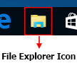
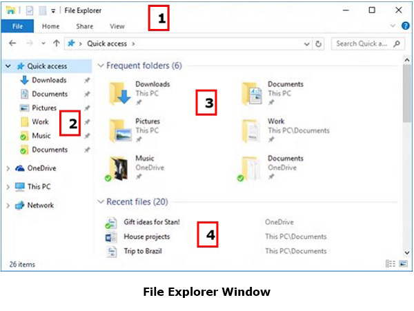

ఫైల్ ఎక్స్ప్లోరర్ (File Explorer) అనేది, ఇంటర్నల్ స్టోరేజ్ డివైసెస్ (Internal Storage devices) మరియు ఎక్స్టర్నల్ స్టోరేజ్ డివైసెస్ (External Storage devices) లలో ఉన్న ఫోల్డర్స్ (Folders) మరియు ఫైల్స్ (Files) ను చూడడానికి అదేవిధంగా వాటిని ఓపెన్ చేసుకోవడానికి, విండోస్ ఆపరేటింగ్ సిస్టమ్స్ (Windows Operating Systems) చేత లేదా విండోస్ ఆపరేటింగ్ సిస్టమ్స్ (Windows Operating Systems) లలో ఉపయోగించే ఫైల్ మేనేజ్మెంట్ అప్లికేషన్ (File Management Application).
ఈ ఫైల్ ఎక్స్ప్లోరర్ (File Explorer) అనేది విండోస్ ఆపరేటింగ్ సిస్టమ్స్ (Windows Operating Systems) ను ఉపయోగించేవారికి, వారి కంప్యూటర్ (Computer) నందు నిల్వ చేయబడిన ఫైల్స్ (Files) మరియు ఫోల్డర్స్ (Folders) ను చిన్న చిన్న బొమ్మల రూపంలో అనగా ఐకాన్స్ (Icons) రూపంలో చూపిస్తూంటుంది. దీనినే కంప్యూటర్ (Computer) పరి భాషలో గ్రాఫికల్ ఇంటర్ఫేస్ (Graphical Interface) అని అంటారు.
ఈ ఫైల్ ఎక్స్ప్లోరర్ (File Explorer) ను తెరుచుటకు (Open చేయుటకు) గల ముఖ్యమైన మార్గము, టాస్క్బార్ (Taskbar) నందున్న ఫైల్ ఎక్స్ప్లోరర్ (File Explorer) ఫోల్డర్ చిహ్నం (Folder Icon) మీద లెఫ్ట్ మౌస్ బటన్ (Left Mouse Button) తో ఒకసారి నొక్కడం (Single Click చేయడం) (పైన చిత్రములో చూడుము). ఇలా ఫైల్ ఎక్స్ప్లోరర్ (File Explorer) ఫోల్డర్ చిహ్నం (Folder Icon) మీద లెఫ్ట్ మౌస్ బటన్ (Left Mouse Button) తో ఒకసారి నొక్కిన (Single Click చేసిన) వెంటనే క్రింద చిత్రంలో చూపిన విధంగా ఫైల్ ఎక్స్ప్లోరర్ (File Explorer) విండో ఓపెన్ అవుతుంది.
ఇలా ఓపెన్ ఐన ఫైల్ ఎక్స్ప్లోరర్ (File Explorer) విండో, పైన చిత్రంలో చూపించిన విధముగా 4 విభాగాలను కలిగి ఉంటుంది. అవి
ఫైల్ ఎక్స్ప్లోరర్ రిబ్బన్ (File Explorer Ribbon):-
ఈ ఫైల్ ఎక్స్ప్లోరర్ రిబ్బన్ అనేది మైక్రోసాఫ్ట్ ఆఫీస్ రిబ్బన్ ఫీచర్ ను పోలి ఉంటుంది. ఈ రిబ్బన్, మీరు మీ ఫైల్స్ మరియు ఫోల్డర్స్ తో సర్వ సాధారణంగా నిర్వర్తించే లేదా నిర్వహించే పనులకోసం కొన్ని బటన్స్ ను కల్గి ఉంటుంది. అవి ఫైల్ (File), హోం (Home), షేర్ (Share), వ్యూ (View) మొదలగునవి.నావిగేషన్ పేన్ (Navigation Pane):-
ఈ నావిగేషన్ పేన్ (Navigation Pane) అనేది, కంప్యూటర్ నందున్న డాక్యుమెంట్స్, పిక్చర్స్, వీడియోస్, మరియు మ్యూజిక్ వంటి లైబ్రరీస్ ఫోల్డర్స్ అదే విధంగా స్టోరేజ్ డివైసెస్ మరియు తరచుగా ఉపయోగించిన ఫోల్డర్స్ మరియు నెట్ వర్క్ డివైసెస్ మొదలగు వాటినన్నింటిని చూడడానికి మరియు వాటిని ఓపెన్ చేయడానికి అవకాశం కల్పిస్తుంది.